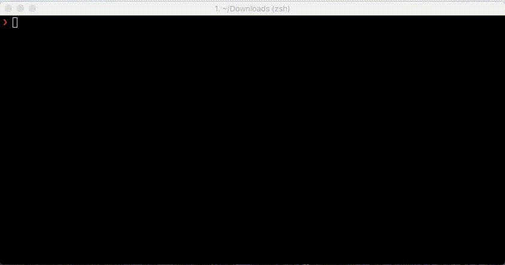

Fetch Timeline CLI



Fetch Twitter user's timeline from your terminal
Install
npm install fetch-timeline-cli --global
For know how to use, write fetch-timeline --help
Related
- fetch-timeline – Readable Stream that content tweets fetched from a Twitter user timeline.
License
MIT © Kiko Beats